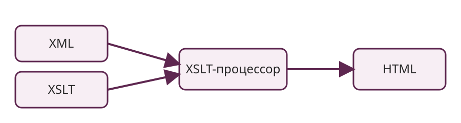

XSLT
XSLT — язык преобразований XML. Он использует XPath для выбора узлов и шаблоны для построения нового результата.

Пример шаблона
<xsl:template match="/">
<html>
<body>
<ul>
<xsl:for-each select="catalog/book">
<li><xsl:value-of select="title"/></li>
</xsl:for-each>
</ul>
</body>
</html>
</xsl:template>В папке examples проекта находятся связанные файлы books.xml и books.xsl.
Где полезен XSLT
- Преобразование XML в HTML для публикации.
- Перестройка XML одного формата в другой.
- Фильтрация и сортировка элементов.
- Генерация текстовых представлений.